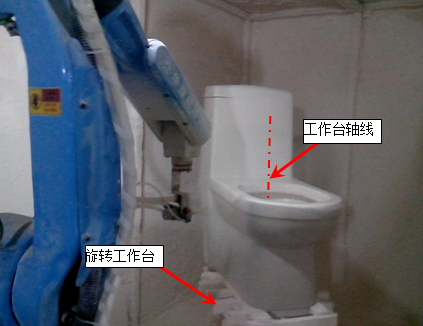
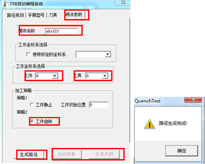
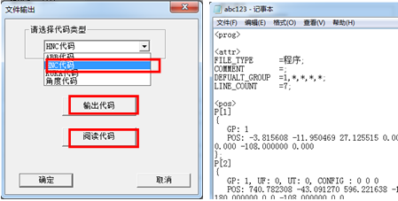

7.2马桶喷釉离线编程
7.2.2喷釉操作步骤
1、①打开坐便器模型，通过旋转和移动的方式将三维模型放置到旋转工作台所在的位置，并且使坐便器的前方正对机器人。
②旋转工作台的实际位置是通过在机器人坐标系下测量得到的。经测量，本例中旋转工作台上表面中心点在机器人坐标系中的坐标为（1270,0,75）。如图7-12所示。

图7-12 旋转工作台
2、在[Robot]模块中选择[编程]命令，弹出机器人离线编程加工模块的“路径列表”界面。如图7-13所示。
图7-13 离线编程加工模块的“路径列表”界面
3、然后选择[功能]|[新建操作]|[新建卫浴喷涂加工策略]，弹出“TRB自动编程系统”界面。如图7-14、图7-15所示。
图7-14 新建操作
4、先对顶面进行规划；①点击[选择点]，在顶面上依次选择三个点；②[转角]设置均为90；③第一点（图中高亮）和第三点的[喷雾控制]参数为0（即关闭），第二个点的喷雾控制参数为1（即打开）。其他参数设为默认值。如图7-16所示。
图7-15 “TRB自动编程系统”界面
图7-16 顶面的路径规划
5、对后侧面进行规划；①点击[选择点]，在后侧面上依次选择10个点；②第一个点（图中高亮）和最后一个点的[喷雾控制]设置为0，其余点设置为1。其他参数为默认参数，如图7-17所示。
图7-17 后侧面的路径规划
6、对左侧面进行规划；依次选择四个点，参数设置同步骤5，如图7-18所示。
图7-18 左侧面的路径规划
7、对前侧面进行规划；依次选择四个点，参数设置同步骤5，如图7-19所示。
图7-19 前侧面的路径规划
8、对坐垫区进行规划；①依次选择八个点，第一个点和最后一个点的[喷雾控制]设置为0，其余点设置为1；②所有点的[转角]设置为90度。其它参数设为默认值，如图7-20所示。
图7-20 坐垫区的路径规划/p>
9、对右侧面以及下方大外围进行规划；①如图7-21所示分层依次选点，使路径能够覆盖整个坐便器。②调整喷枪矢量的方向，使每层中喷枪末端基本位于同一水平面内，必要时还可以调整点的位置。③第一点（高亮）和最后一点的[喷雾控制]设置为0，其余点设置为1。其它参数设为默认值。
图7-21 右侧面及下方大外围的路径规划
10、每次路径规划完成后，切换到[手臂型号]属性页，在[选择型号]下拉框中选择机器人型号。这里选择HSR-JR612机器人，如图7-22所示。
图7-22 选择机器人型号
11、切换到[刀具]属性页；点击[选择刀具]按钮弹出，弹出刀具“查询”列表，选择“SprayGun”工具并[确定]，如图7-23所示。
图7-23 选择刀具
12、切换到[喷涂参数]属性页；①输入[模块名称]，模块名称可以是数字或字母。②根据机器人实际的工件标定和工具标定选择工作坐标系，这里默认均选择“0”。③选择加工策略中的[工件旋转]。④然后点击[生成路径]按钮，若无错误，则弹出“路径生成完成”提示框，点击[确定]。如图7-24所示。

图7-24 喷涂参数设置
13、路径生成成功后，[运动仿真]和[生成代码]按钮可用。①点击[运动仿真]，框选模型和路径，确定后弹出提示框，再次确定，此时导入机器人模型，并弹出运动仿真的对话框。②点击开始按钮即可观看运动仿真的情况。在运动仿真对话框中，可以步进、步退和暂停。如图7-25所示。
图7-25 运动仿真
14、如果运动仿真没有错误，点击[确定]关闭运动仿真对话框，接下来就可以生成机器人加工代码。①点击[生成代码]，弹出“文件输出”对话框，点击下拉按钮，可以选择多种类型的机器人代码，这里选择“HNC代码”。②点击[输出代码]，选择代码保持的文件名和文件路径，确定后即可。③点击[阅读代码]即可查看输出的代码，确定后关闭文件输出对话框。如图7-26所示。

图7-26 生成代码
15、代码输出完成后。可以对规划的路径进行保存，以便下一次打开，进行修改。①点击“TRB自动编程系统”界面中的确定按钮，关闭“TRB自动编程系统”界面。②在“路径列表”界面中点击[文件]|[保存]，输入文件名称，选择文件保存的路径，确定后提示保存是否成功。③最后即可将路径列表关闭，退出机器人离线编程加工模块。如图7-27所示。
图7-27 路径保存
16、将输出的代码载入到机器人系统中，就可以进行测试和使用。本例使用的机器人是华中数控机器人的控制器，因此输出的是HNC代码。在机器人上进行测试，测试的效果如图7-28、图7-29所示。
图7-28 喷涂现场测试存
图7-29 喷涂后的坐便器